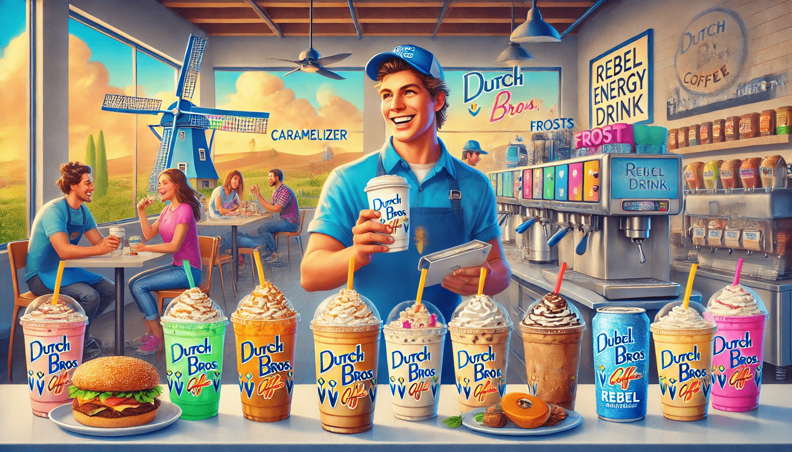

Dutch Bros, the iconic drive-through coffee chain, has been a staple in many American cities, particularly in Oregon, California, Texas, Arizona, and even Atlanta, where it's a fan favorite. Known for its vibrant atmosphere and speedy service, Dutch Bros offers a diverse menu that caters to every taste bud, from coffee aficionados to tea enthusiasts and those with a sweet tooth for frosty treats. Let's dive into the world of Dutch Bros and explore what makes their menu so special.
At the heart of Dutch Bro menu are their coffee classics. These drinks are crafted to provide a perfect blend of flavors and energy to kick-start your day. Whether you prefer a simple cup of joe or something more elaborate, Dutch Bros has you covered:
Dutch Bros is known for its seasonal offerings, which add a touch of excitement to their menu. These limited-time drinks are crafted to match the mood and flavors of the season:
For those who prefer tea over coffee, Dutch Bros has a delightful selection of tea drinks that are just as flavorful:
To complement your drink, Dutch Bros offers a selection of snacks and baked goods. These treats are perfect for a quick bite on the go:
Dutch Bros is known for its loyal customer base, and to reward this loyalty, they offer a rewards program. By joining, customers can earn points for every purchase, redeemable for free drinks and other perks. This program encourages customers to try new items and keeps them coming back for more.
One of the best things about Dutch Bros is the ability to customize your drinks. Whether you prefer your coffee hot or iced, with cream or without, Dutch Bros allows you to tailor your drink to your exact specifications. This flexibility is especially appealing to those with dietary restrictions or unique taste preferences.
Dutch Bros isn't just about the drinks; it's also about the culture and experience. The chain is famous for its friendly baristas and the energetic vibe of its locations. Whether you're grabbing a quick coffee on your way to work or meeting friends for a casual catch-up, Dutch Bros provides a welcoming atmosphere that makes every visit enjoyable.
In conclusion, the Dutch Bros menu is a treasure trove of flavors and options that cater to a wide range of tastes. From classic coffee drinks to seasonal specials and teas, there's something for everyone. The ability to customize your drinks, combined with the friendly service and lively atmosphere, makes Dutch Bros a beloved destination for coffee lovers across the United States. Whether you're a longtime fan or just discovering Dutch Bros, their menu is sure to delight and keep you coming back for more.
Dutch Bros Coffee is a beloved coffee chain known for its friendly atmosphere and flavorful beverages, operating with convenient hours to cater to all schedules. Wondering when does Dutch Bros close? Most locations open at 5:00 AM, closing at 10:00 PM on weekdays, with extended hours until 11:00 PM on Fridays and Saturdays, and returning to 10:00 PM on Sundays. While holiday hours may vary, with reduced timings on Christmas Eve and closures on Christmas Day, some locations, such as those in Las Vegas and Portland, operate 24/7 to serve night owls and early risers. Dutch Bros also offers a handy store locator tool on their website and app to find nearby locations and check hours. For happy hour enthusiasts, discounts are available from 3:00 PM to 6:00 PM, making it the perfect stop for affordable, tasty drinks. To beat the crowd, visit during non-peak times or use their app for a seamless experience.
Dutch Bros is more than just a coffee chain; it's an experience that combines great drinks with a fun, energetic atmosphere. Whether you're a coffee aficionado, a tea lover, or someone who enjoys a good frosty treat, Dutch Bros has something for you. So, the next time you're in the mood for a delicious drink and a friendly chat, head over to your nearest Dutch Bros and discover why it's become a staple in so many communities.